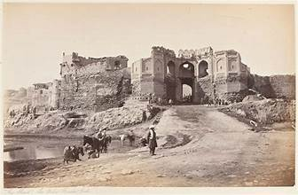

Bala Hisar Fort
A historic fort in Peshawar, Khyber Pakhtunkhwa, Pakistan, overlooking the city and surrounding hills.
A historic fort in Peshawar, Khyber Pakhtunkhwa, Pakistan, overlooking the city and surrounding hills.
Bala Hisar Fort is an ancient fortress in Peshawar, originally built by the Mughal emperors and later expanded by the Durrani and Sikh rulers. Perched on a hilltop, it offers strategic views of the city and surrounding valleys. The fort has served as a military base and royal residence throughout its history.
Today, Bala Hisar Fort stands as a symbol of Peshawar’s historical significance and architectural heritage.
Bala Hisar Fort features traditional Mughal and Durrani architectural elements, including massive walls, bastions, and gateways. The fort has several courtyards, guard towers, and residential areas for soldiers and rulers. Its elevated location provided defensive advantages and a commanding view of the surrounding area.
